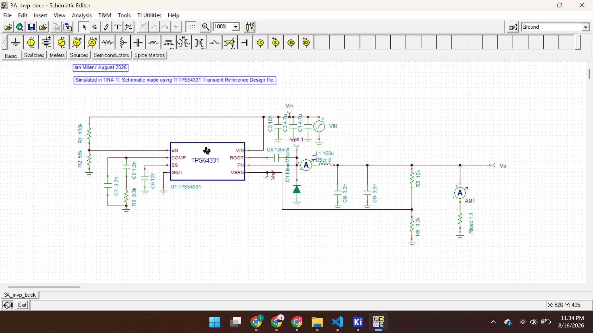
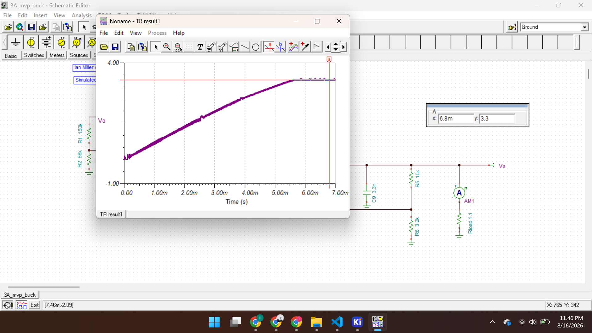
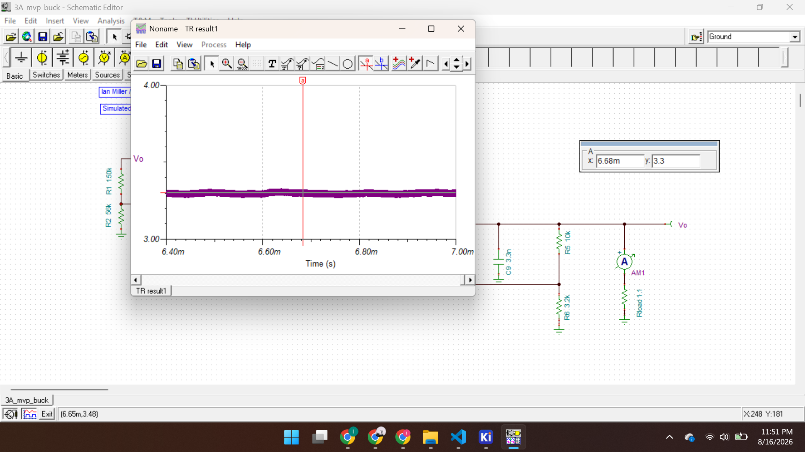
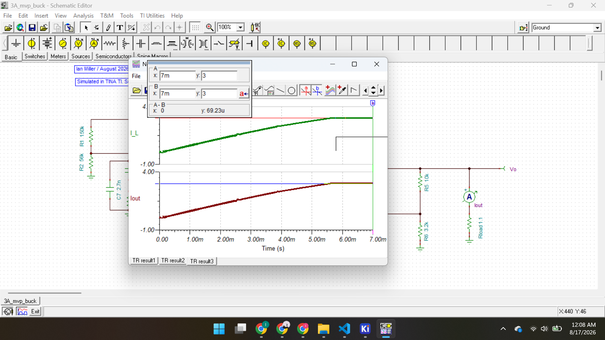

5 V -> 3.3 V Buck Converter
A buck converter PCB that takes a 5 V Vin to a 3.3 V Vout at 3 A. (Note: I know 3 A is a kind of weird output current for a 3.3 V output, but I didn't really have a use in mind for this buck converter, so the choice is more or less arbitrary. Also, shifting the goalposts after an initial decision kind of felt like cheating, so I just stuck with the weird number lol.)
overview
[What is this project, and why did you build it?]
design / approach
I began my design with the TPS54331 IC from Texas Instruments. I'll link the datasheet here I had a couple criteria for choosing this specific IC, namely that it fit the 5V input and 3.3V output requirements and relied on an external compensator (I wanted the additional challenge of designing this myself). After that, there are like hundreds of different ICs that would have fit those criteria, so the choice of the TPS54331 was more or less arbitrary.
From there, I chose component values. You can see here what they are on this Google Sheet. I won't go through every single value because that would be a bit too exhaustive, but I will give a general overview of both the purpose of each component along with a citation of the where in the datasheet I found either the component value or the equation to get that value.
| Component(s) | Explanation | Source |
|---|---|---|
| R1, R2 | R1 and R2 form a voltage divider that sets a undervoltage lockout network. Essentially, if the voltage going into the EN pin (the voltage that goes through R1 but not R2) crosses a certain threshold, then the IC's shutdown logic is triggered, protecting the IC from high voltages. | R1: Equation (1), R2: Equation (2) |
| R3 | This is the resistor of the Type II external compensator. At high frequency current coming from the COMP pin, this resistor is responsible for most of the voltage loss, as the capacitors behave more and more like wires at high frequency currents. The voltage drop across the resistor has little to no delay with time, as opposed to the capacitor, which needs to charge, providing an amount of instant feedback. | Equation (26) |
| R4 | Just a removable switch for testing purposes. Set at 0. | pg. 15 |
| R5, R6 | These resistors form a voltage divider that is essentially the backbone of determining what Vout is (see equation 5). Nudging the ratio between R5 and R6 up or down is the most immediate way to change Vout. The IC will constantly try to adjust its PWM such that the voltage at the VSNS pin will be equal to the internal reference voltage of 0.8 V. | R5: pg. 15, R6: Equation (4) |
| C1, C2, C3 | These are input capacitors, and they serve to filter out some high frequency noise from the input. These are actually kind of optional; the datasheet includes them, but the Transient Reference Design doesn't include them. It just sort of depends on how noisy your Vin source is. I included them because why not? I can afford the extra few cents in capacitors. Broke this up into three capacitors as opposed to just one for lower ESR. | all of them: pg. 15 |
| C4 | C4 is the bootstrap capacitor. It makes it possible for the PH pin to be supplied with a voltage higher than the input voltage, thus turning on the internal high side MOSFET in the internal IC. | pg. 20 |
| C5 | The C5 capacitor is entirely responsible for programming the circuit's slow start time. In my case here, I chose a 5 ms slow start, which I've since realized is a little bit on the slower, safer side, but I am fine with that. | reworking Equation (3) |
| C6, C7 | These are the capacitors of the compensator (the resistor of this compensator being R3, described a bit above). At low frequencies, C6 builds up higher and higher voltage, as it acts as a short. This sets the low frequency value of the gain. Meanwhile, C7 acts as a wire at super high frequencies, determining the high frequency value of the gain. | C6: Equation (27), C7: Equation (28) |
| C8, C9 | These are the output capacitors. They're split up into two separate capacitors to lower ESR and to limit self heating and capacitor heat degradation (given that I'm using ceramic capacitors for these lower values). They, along with the inductor which will be described next, function as a low pass filter that turns the AC current into a DC output. | C8, C9: Equation (12) |
| L | This, along with the capacitors described above serves as a low pass filter. In addition, it makes it difficult for current to instantaneously change. Now that's kind of obvious, but what that does specifically here is turn the square wave that comes from the inside of the IC into a much neater triangle type wave. The capacitors (C8 and C9) then smooths that. Also, something worth noting: I had to increase this inductance value to 150 uH, despite the calculated Lmin value being much lower. The output voltage was just a lot more unstable at lower inductance values, a lot more wonky, so I increased it. |
TINA TI Simulations
I decided to simulate all of this in TINA-TI. I initially wanted to do it in LTSpice, since I have a little bit of experience with LTSpice, but I had trouble getting the TI component in, so I just decided to run with TI's own software. I imported the Transient Reference Design from the TI website, and I swapped out all of their components for my components. I also had to add in the input capacitors because the reference design didn't include them. I also downloaded the B340A diode and inserted that as well, in replacement of the diode the reference design used.
I decided to simulate all of this in TINA-TI. I initially wanted to do it in LTSpice, since I have a little bit of experience with LTSpice, but I had trouble getting the TI component in, so I just decided to run with TI's own software. I imported the Transient Reference Design from the TI website, and I swapped out all of their components for my components. I also had to add in the input capacitors because the reference design didn't include them. I also downloaded the B340A diode and inserted that as well, in replacement of the diode the reference design used.
Here was my schematic (ooh, ahh):

Next, the most obvious metric to run is to look at the output voltage over time. Initially, the values were very wonky and I had to bump up the inductance of the inductor, but eventually I got this graph, with a steady rise and a more relatively flat steady state voltage. After 5 ms (a chosen slow start value), the voltage reached its steady output, and it was exactly what I calculated it to be.

It's also a good idea to get a good look at the steady state voltage ripple, but even that's more or less negligible.

Similarly, we can look at the current going through both the inductor and the output current. Thankfully, the output current is on par with our target of 3 A, but interestingly, we can also see that the current through the inductor is equal to the output current value. Conceptually, we can see why this makes sense. The load resistance is 1.1 Ohms, and the VSNS branch is 10k Ohms, so most of the current will naturally go through the 1.1 Ohm output branch. The output capacitors likely do manage to filter out some high frequency noise, but that is probably minimal.

With this working I had my confirmation to finalize the PCB design in KiCad.
Real circuit validation
This section is under construction until the PCBs actually ship to me and I can test this in person!
Next steps
A possible followup project-- or not even followup project, more of a Part 1.5 as opposed to a Part 2, would be too take a more involved look at the compensator design. My math says the compensator should work, and I understand conceptually how a Type II compensator works (in part thanks to this TI pdf thingy).